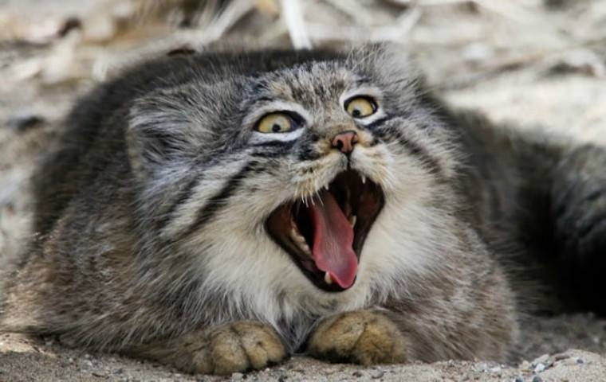

My Github page
About me
My name is Antti Kurkinen and I'm student at Oulu University of Applied Sciences.
My favourite animal
My favourite animal is Pallas's cat. Pallas's cat (Wikipedia article)

Download this document by clicking the hyperlink below
Test document